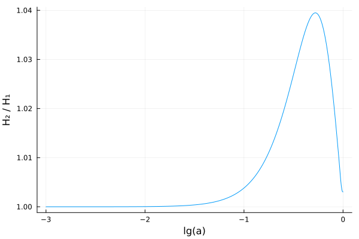

Creating extended models
This tutorial shows how to create extended (beyond-ΛCDM) models.
As a simple example, we will replace the cosmological constant Λ with equation of state $P(t) / \rho(t) = w(t) = -1$ in the pure ΛCDM model with the w₀wₐ-parametrization from Chevallier, Polarski (2000) and Linder (2002) with equation of state
\[w(t) = w_0 + w_a (1 - a(t)).\]
With this equation of state, solving the continuity equation
\[\frac{\mathrm{d} \rho(t)}{\mathrm{d}t} = -3 H(t) \, (ρ(t) + P(t)) = -3 H(t) \, \rho(t) \, (1 + w(t))\]
with the ansatz $\rho(t) = \rho(t_0) \, a(t)^m \exp(n (1 - a(t)))$ gives $m = -3 (1 + w_0 + w_a)$, $n = -3 w_a$ and hence
\[\rho(t) = \rho(t_0) \, a(t)^{1 + w_0 + w_a} \exp(w_a (1 - a(t))).\]
TODO: use t for cosmic time, τ for conformal time
Create the symbolic component
SymBoltz.jl represents each component of the Einstein-Boltzmann equations as a partial/incomplete ModelingToolkit.jl ODESystem. These are effectively "chunks" of logically related parameters, variables, equations and initial conditions that are composed together into a full/complete cosmological model. Let us create a component for the w₀wₐ-parametrization:
using ModelingToolkit # must be loaded to create custom components
using SymBoltz: t, ϵ # load conformal time and perturbation book-keeper
# Create a function that creates a symbolic w0wa dark energy component
function w0wa(g; kwargs...)
# 1. Create parameters
pars = @parameters w0 wa ρ0 Ω0
# 2. Create variables
vars = @variables ρ(t) P(t) w(t) δ(t) σ(t)
# 3. Specify background equations (~ means equality in ModelingToolkit)
eqs0 = [
w ~ w0 + wa * (1 - g.a) # equation of state
ρ ~ ρ0 * g.a^(-3 * (1 + w0 + wa)) * exp(-3 * wa * (1 - g.a)) # energy density
P ~ w * ρ # pressure
] .|> SymBoltz.O(ϵ^0) # O(ϵ⁰) multiplies all equations by 1 (no effect), marking them as background equations
# 4. Specify perturbation (O(ϵ^0)) equations # TODO: include
eqs1 = [
δ ~ 0 # energy overdensity
σ ~ 0 # shear stress
] .|> SymBoltz.O(ϵ^1) # O(ϵ^1) multiplies all equations by ϵ, marking them as perturbation equations
# 5. Specify relationships between parameters
defaults = [
ρ0 => 3/8π * Ω0
]
# 6. Pack everything into an ODE system
return ODESystem([eqs0; eqs1], t, vars, pars; defaults, kwargs...)
end
# TODO: should illustrate initialization_eqs behaviorw0wa (generic function with 1 method)Create the standard and extended models
We can now create both the standard ΛCDM model, and then recreate it with the cosmological constant replaced by the w₀wₐ-component to construct the extended w₀wₐCDM model:
# TODO: start with M1 from the very top, then add M2 later
using SymBoltz
M1 = ΛCDM(name = :ΛCDM)
X = w0wa(M1.g; name = :X)
M2 = ΛCDM(Λ = X, name = :w0waCDM)\[ \begin{align} G_+\rho\left( t \right) &= h_+\rho\left( t \right) + c_+\rho\left( t \right) + X_+\rho\left( t \right) + b_+\rho\left( t \right) + \gamma_+\rho\left( t \right) + \nu_+\rho\left( t \right) \\ b_{+}rec_+{\rho}b\left( t \right) &= 1.4983 \cdot 10^{10} H0^{2} b_+\rho\left( t \right) \\ b_{+}rec_{+}T\gamma\left( t \right) &= \gamma_{+}T\left( t \right) \\ G_+\delta\rho\left( t \right) \epsilon &= \left( h_+\rho\left( t \right) h_+\delta\left( t \right) + c_+\rho\left( t \right) c_+\delta\left( t \right) + \gamma_+\delta\left( t \right) \gamma_+\rho\left( t \right) + X_+\rho\left( t \right) X_+\delta\left( t \right) + \nu_+\delta\left( t \right) \nu_+\rho\left( t \right) + b_+\rho\left( t \right) b_+\delta\left( t \right) \right) \epsilon \\ G_+\Pi\left( t \right) \epsilon &= \left( \left( h_+\rho\left( t \right) + h_{+}P\left( t \right) \right) h_+\sigma\left( t \right) + \left( b_{+}P\left( t \right) + b_+\rho\left( t \right) \right) b_+\sigma\left( t \right) + \left( c_+\rho\left( t \right) + c_{+}P\left( t \right) \right) c_+\sigma\left( t \right) + \left( X_+\rho\left( t \right) + X_{+}P\left( t \right) \right) X_+\sigma\left( t \right) + \left( \gamma_+\rho\left( t \right) + \gamma_{+}P\left( t \right) \right) \gamma_+\sigma\left( t \right) + \left( \nu_+\rho\left( t \right) + \nu_{+}P\left( t \right) \right) \nu_+\sigma\left( t \right) \right) \epsilon \\ b_+{\theta}interaction\left( t \right) \epsilon &= \frac{ - 4 \left( \gamma_+\theta\left( t \right) - b_+\theta\left( t \right) \right) \gamma_+\rho\left( t \right) b_{+}rec_{+}d\tau\left( t \right) \epsilon}{3 b_+\rho\left( t \right)} \\ \gamma_+\dot{\tau}\left( t \right) \epsilon &= b_{+}rec_{+}d\tau\left( t \right) \epsilon \\ \gamma_+{\theta}b\left( t \right) \epsilon &= b_+\theta\left( t \right) \epsilon \\ \mathscr{E}\left( t \right) &= \frac{\frac{\mathrm{d} a\left( t \right)}{\mathrm{d}t}}{a\left( t \right)} \\ E\left( t \right) &= \frac{\mathscr{E}\left( t \right)}{a\left( t \right)} \\ \mathscr{H}\left( t \right) &= H0 \mathscr{E}\left( t \right) \\ H\left( t \right) &= H0 E\left( t \right) \\ \frac{\mathrm{d} a\left( t \right)}{\mathrm{d}t} &= \left( a\left( t \right) \right)^{2} \sqrt{8.3776 G_+\rho\left( t \right)} \\ G_+{\rho}crit\left( t \right) &= 0.11937 \left( E\left( t \right) \right)^{2} \\ \frac{\mathrm{d} \Phi\left( t \right)}{\mathrm{d}t} \epsilon &= \left( \frac{ - k^{2} \Phi\left( t \right)}{3 \mathscr{E}\left( t \right)} + \frac{ - 4.1888 \left( a\left( t \right) \right)^{2} G_+\delta\rho\left( t \right)}{\mathscr{E}\left( t \right)} - \mathscr{E}\left( t \right) \Psi\left( t \right) \right) \epsilon \\ k^{2} \left( - \Psi\left( t \right) + \Phi\left( t \right) \right) \epsilon &= 37.699 \left( a\left( t \right) \right)^{2} G_+\Pi\left( t \right) \epsilon \\ \frac{\mathrm{d} \gamma_{+}F0\left( t \right)}{\mathrm{d}t} \epsilon &= \left( 4 \frac{\mathrm{d} \Phi\left( t \right)}{\mathrm{d}t} - k \gamma_{+}F\left( t \right)_{1} \right) \epsilon \\ \frac{\mathrm{d} \gamma_{+}F\left( t \right)_{1}}{\mathrm{d}t} \epsilon &= \left( \frac{ - 1.3333 \left( \gamma_+{\theta}b\left( t \right) - \gamma_+\theta\left( t \right) \right) \gamma_+\dot{\tau}\left( t \right)}{k} + \frac{1}{3} k \left( 4 \Psi\left( t \right) + \gamma_{+}F0\left( t \right) - 2 \gamma_{+}F\left( t \right)_{2} \right) \right) \epsilon \\ \frac{\mathrm{d} \gamma_{+}F\left( t \right)_{2}}{\mathrm{d}t} \epsilon &= \left( 0.4 k \gamma_{+}F\left( t \right)_{1} - 0.6 k \gamma_{+}F\left( t \right)_{3} - 0.1 \left( \gamma_{+}G0\left( t \right) + \gamma_{+}G\left( t \right)_{2} \right) \gamma_+\dot{\tau}\left( t \right) + 0.9 \gamma_+\dot{\tau}\left( t \right) \gamma_{+}F\left( t \right)_{2} \right) \epsilon \\ \frac{\mathrm{d} \gamma_{+}F\left( t \right)_{3}}{\mathrm{d}t} \epsilon &= \left( \frac{1}{7} k \left( 3 \gamma_{+}F\left( t \right)_{2} - 4 \gamma_{+}F\left( t \right)_{4} \right) + \gamma_+\dot{\tau}\left( t \right) \gamma_{+}F\left( t \right)_{3} \right) \epsilon \\ \frac{\mathrm{d} \gamma_{+}F\left( t \right)_{4}}{\mathrm{d}t} \epsilon &= \left( \frac{1}{9} k \left( 4 \gamma_{+}F\left( t \right)_{3} - 5 \gamma_{+}F\left( t \right)_{5} \right) + \gamma_+\dot{\tau}\left( t \right) \gamma_{+}F\left( t \right)_{4} \right) \epsilon \\ \frac{\mathrm{d} \gamma_{+}F\left( t \right)_{5}}{\mathrm{d}t} \epsilon &= \left( \frac{1}{11} k \left( 5 \gamma_{+}F\left( t \right)_{4} - 6 \gamma_{+}F\left( t \right)_{6} \right) + \gamma_+\dot{\tau}\left( t \right) \gamma_{+}F\left( t \right)_{5} \right) \epsilon \\ \frac{\mathrm{d} \gamma_{+}F\left( t \right)_{6}}{\mathrm{d}t} \epsilon &= \left( \frac{ - 7 \gamma_{+}F\left( t \right)_{6}}{t} + k \gamma_{+}F\left( t \right)_{5} + \gamma_+\dot{\tau}\left( t \right) \gamma_{+}F\left( t \right)_{6} \right) \epsilon \\ \gamma_+\delta\left( t \right) \epsilon &= \gamma_{+}F0\left( t \right) \epsilon \\ \gamma_+\theta\left( t \right) \epsilon &= 0.75 k \gamma_{+}F\left( t \right)_{1} \epsilon \\ \gamma_+\sigma\left( t \right) \epsilon &= \frac{1}{2} \gamma_{+}F\left( t \right)_{2} \epsilon \\ \gamma_+\Pi\left( t \right) \epsilon &= \left( \gamma_{+}G0\left( t \right) + \gamma_{+}F\left( t \right)_{2} + \gamma_{+}G\left( t \right)_{2} \right) \epsilon \\ \frac{\mathrm{d} \gamma_{+}G0\left( t \right)}{\mathrm{d}t} \epsilon &= \left( - k \gamma_{+}G\left( t \right)_{1} - \left( - \gamma_{+}G0\left( t \right) + \frac{1}{2} \gamma_+\Pi\left( t \right) \right) \gamma_+\dot{\tau}\left( t \right) \right) \epsilon \\ \frac{\mathrm{d} \gamma_{+}G\left( t \right)_{1}}{\mathrm{d}t} \epsilon &= \left( \frac{1}{3} k \left( \gamma_{+}G0\left( t \right) - 2 \gamma_{+}G\left( t \right)_{2} \right) + \gamma_+\dot{\tau}\left( t \right) \gamma_{+}G\left( t \right)_{1} \right) \epsilon \\ \frac{\mathrm{d} \gamma_{+}G\left( t \right)_{2}}{\mathrm{d}t} \epsilon &= \left( \frac{1}{5} k \left( 2 \gamma_{+}G\left( t \right)_{1} - 3 \gamma_{+}G\left( t \right)_{3} \right) - \left( \frac{1}{10} \gamma_+\Pi\left( t \right) - \gamma_{+}G\left( t \right)_{2} \right) \gamma_+\dot{\tau}\left( t \right) \right) \epsilon \\ \frac{\mathrm{d} \gamma_{+}G\left( t \right)_{3}}{\mathrm{d}t} \epsilon &= \left( \frac{1}{7} k \left( 3 \gamma_{+}G\left( t \right)_{2} - 4 \gamma_{+}G\left( t \right)_{4} \right) + \gamma_+\dot{\tau}\left( t \right) \gamma_{+}G\left( t \right)_{3} \right) \epsilon \\ \frac{\mathrm{d} \gamma_{+}G\left( t \right)_{4}}{\mathrm{d}t} \epsilon &= \left( \frac{1}{9} k \left( 4 \gamma_{+}G\left( t \right)_{3} - 5 \gamma_{+}G\left( t \right)_{5} \right) + \gamma_+\dot{\tau}\left( t \right) \gamma_{+}G\left( t \right)_{4} \right) \epsilon \\ \frac{\mathrm{d} \gamma_{+}G\left( t \right)_{5}}{\mathrm{d}t} \epsilon &= \left( \frac{1}{11} k \left( 5 \gamma_{+}G\left( t \right)_{4} - 6 \gamma_{+}G\left( t \right)_{6} \right) + \gamma_+\dot{\tau}\left( t \right) \gamma_{+}G\left( t \right)_{5} \right) \epsilon \\ \frac{\mathrm{d} \gamma_{+}G\left( t \right)_{6}}{\mathrm{d}t} \epsilon &= \left( \frac{ - 7 \gamma_{+}G\left( t \right)_{6}}{t} + k \gamma_{+}G\left( t \right)_{5} + \gamma_+\dot{\tau}\left( t \right) \gamma_{+}G\left( t \right)_{6} \right) \epsilon \\ \gamma_{+}T\left( t \right) &= \frac{\gamma_{+}T0}{a\left( t \right)} \\ \gamma_{+}P\left( t \right) &= \frac{1}{3} \gamma_+\rho\left( t \right) \\ \gamma_+\rho\left( t \right) &= \frac{\gamma_+{\rho}0}{\left( a\left( t \right) \right)^{4}} \\ \frac{\mathrm{d} \nu_{+}F0\left( t \right)}{\mathrm{d}t} \epsilon &= \left( 4 \frac{\mathrm{d} \Phi\left( t \right)}{\mathrm{d}t} - k \nu_{+}F\left( t \right)_{1} \right) \epsilon \\ \frac{\mathrm{d} \nu_{+}F\left( t \right)_{1}}{\mathrm{d}t} \epsilon &= \frac{1}{3} k \left( 4 \Psi\left( t \right) + \nu_{+}F0\left( t \right) - 2 \nu_{+}F\left( t \right)_{2} \right) \epsilon \\ \frac{\mathrm{d} \nu_{+}F\left( t \right)_{2}}{\mathrm{d}t} \epsilon &= \frac{1}{5} k \left( 2 \nu_{+}F\left( t \right)_{1} - 3 \nu_{+}F\left( t \right)_{3} \right) \epsilon \\ \frac{\mathrm{d} \nu_{+}F\left( t \right)_{3}}{\mathrm{d}t} \epsilon &= \frac{1}{7} k \left( 3 \nu_{+}F\left( t \right)_{2} - 4 \nu_{+}F\left( t \right)_{4} \right) \epsilon \\ \frac{\mathrm{d} \nu_{+}F\left( t \right)_{4}}{\mathrm{d}t} \epsilon &= \frac{1}{9} k \left( 4 \nu_{+}F\left( t \right)_{3} - 5 \nu_{+}F\left( t \right)_{5} \right) \epsilon \\ \frac{\mathrm{d} \nu_{+}F\left( t \right)_{5}}{\mathrm{d}t} \epsilon &= \frac{1}{11} k \left( 5 \nu_{+}F\left( t \right)_{4} - 6 \nu_{+}F\left( t \right)_{6} \right) \epsilon \\ \frac{\mathrm{d} \nu_{+}F\left( t \right)_{6}}{\mathrm{d}t} \epsilon &= \frac{1}{13} k \left( 6 \nu_{+}F\left( t \right)_{5} - 7 \nu_{+}F\left( t \right)_{7} \right) \epsilon \\ \nu_{+}F\left( t \right)_{7} \epsilon &= \left( \frac{13 \nu_{+}F\left( t \right)_{6}}{k t} - \nu_{+}F\left( t \right)_{5} \right) \epsilon \\ \nu_+\delta\left( t \right) \epsilon &= \nu_{+}F0\left( t \right) \epsilon \\ \nu_+\theta\left( t \right) \epsilon &= 0.75 k \nu_{+}F\left( t \right)_{1} \epsilon \\ \nu_+\sigma\left( t \right) \epsilon &= \frac{1}{2} \nu_{+}F\left( t \right)_{2} \epsilon \\ \nu_{+}T\left( t \right) &= \frac{\nu_{+}T0}{a\left( t \right)} \\ \nu_{+}P\left( t \right) &= \frac{1}{3} \nu_+\rho\left( t \right) \\ \nu_+\rho\left( t \right) &= \frac{\nu_+{\rho}0}{\left( a\left( t \right) \right)^{4}} \\ c_{+}P\left( t \right) &= 0 \\ c_+\rho\left( t \right) &= \frac{c_+{\rho}0}{\left( a\left( t \right) \right)^{3}} \\ \frac{\mathrm{d} c_+\delta\left( t \right)}{\mathrm{d}t} \epsilon &= \left( - c_+\theta\left( t \right) + 3 \frac{\mathrm{d} \Phi\left( t \right)}{\mathrm{d}t} \right) \epsilon \\ \frac{\mathrm{d} c_+\theta\left( t \right)}{\mathrm{d}t} \epsilon &= \left( c_+{\theta}interaction\left( t \right) - \mathscr{E}\left( t \right) c_+\theta\left( t \right) + k^{2} \Psi\left( t \right) - k^{2} c_+\sigma\left( t \right) \right) \epsilon \\ c_+\Delta\left( t \right) \epsilon &= \left( \frac{3 \mathscr{E}\left( t \right)}{c_+\theta\left( t \right)} + c_+\delta\left( t \right) \right) \epsilon \\ c_+\sigma\left( t \right) \epsilon &= 0 \\ c_+{\theta}interaction\left( t \right) \epsilon &= 0 \\ b_{+}P\left( t \right) &= 0 \\ b_+\rho\left( t \right) &= \frac{b_+{\rho}0}{\left( a\left( t \right) \right)^{3}} \\ \frac{\mathrm{d} b_+\delta\left( t \right)}{\mathrm{d}t} \epsilon &= \left( - b_+\theta\left( t \right) + 3 \frac{\mathrm{d} \Phi\left( t \right)}{\mathrm{d}t} \right) \epsilon \\ \frac{\mathrm{d} b_+\theta\left( t \right)}{\mathrm{d}t} \epsilon &= \left( b_+{\theta}interaction\left( t \right) - \mathscr{E}\left( t \right) b_+\theta\left( t \right) + k^{2} \Psi\left( t \right) - k^{2} b_+\sigma\left( t \right) \right) \epsilon \\ b_+\Delta\left( t \right) \epsilon &= \left( b_+\delta\left( t \right) + \frac{3 \mathscr{E}\left( t \right)}{b_+\theta\left( t \right)} \right) \epsilon \\ b_+\sigma\left( t \right) \epsilon &= 0 \\ b_{+}rec_{+}nH\left( t \right) &= 5.9743 \cdot 10^{26} \left( 1 - b_{+}rec_{+}Yp \right) b_{+}rec_+{\rho}b\left( t \right) \\ b_{+}rec_{+}nHe\left( t \right) &= b_{+}rec_{+}fHe b_{+}rec_{+}nH\left( t \right) \\ \frac{\mathrm{d} b_{+}rec_{+}Tb\left( t \right)}{\mathrm{d}t} &= \frac{ - 4.9146 \cdot 10^{-22} \left( b_{+}rec_{+}T\gamma\left( t \right) \right)^{4} \left( - b_{+}rec_{+}T\gamma\left( t \right) + b_{+}rec_{+}Tb\left( t \right) \right) a\left( t \right) b_{+}rec_{+}Xe\left( t \right)}{H0 \left( 1 + b_{+}rec_{+}fHe + b_{+}rec_{+}Xe\left( t \right) \right)} - 2 \mathscr{E}\left( t \right) b_{+}rec_{+}Tb\left( t \right) \\ b_{+}rec_{+}DTb\left( t \right) &= \frac{\mathrm{d} b_{+}rec_{+}Tb\left( t \right)}{\mathrm{d}t} \\ b_{+}rec_+{\beta}b\left( t \right) &= \frac{1}{1.3806 \cdot 10^{-23} b_{+}rec_{+}Tb\left( t \right)} \\ b_{+}rec_+{\lambda}e\left( t \right) &= \frac{6.6261 \cdot 10^{-34}}{\sqrt{\frac{5.7236 \cdot 10^{-30}}{b_{+}rec_+{\beta}b\left( t \right)}}} \\ b_{+}rec_+\mu\left( t \right) &= \frac{1.6738 \cdot 10^{-27}}{1 - 0.74816 b_{+}rec_{+}Yp + \left( 1 - b_{+}rec_{+}Yp \right) b_{+}rec_{+}Xe\left( t \right)} \\ b_{+}rec_{+}cs^2\left( t \right) &= \frac{1.3806 \cdot 10^{-23} \left( \frac{ - \frac{\mathrm{d} b_{+}rec_{+}Tb\left( t \right)}{\mathrm{d}t}}{3 \mathscr{E}\left( t \right)} + b_{+}rec_{+}Tb\left( t \right) \right)}{8.9876 \cdot 10^{16} b_{+}rec_+\mu\left( t \right)} \\ b_{+}rec_+{\alpha}H\left( t \right) &= \frac{4.9123 \cdot 10^{-19}}{0.0034166 \left( b_{+}rec_{+}Tb\left( t \right) \right)^{0.6166} \left( 1 + 0.0050847 \left( b_{+}rec_{+}Tb\left( t \right) \right)^{0.53} \right)} \\ b_{+}rec_+{\beta}H\left( t \right) &= \frac{b_{+}rec_+{\alpha}H\left( t \right) e^{ - 5.4468 \cdot 10^{-19} b_{+}rec_+{\beta}b\left( t \right)}}{\left( b_{+}rec_+{\lambda}e\left( t \right) \right)^{3}} \\ b_{+}rec_{+}KH0\left( t \right) &= \frac{1.7966 \cdot 10^{-21}}{25.133 H\left( t \right)} \\ b_{+}rec_{+}KH1\left( t \right) &= \left( - 0.14 e^{ - 30.864 \left( 7.28 + \log\left( a\left( t \right) \right) \right)^{2}} + 0.079 e^{ - 9.1827 \left( 6.73 + \log\left( a\left( t \right) \right) \right)^{2}} \right) b_{+}rec_{+}KH0\left( t \right) \\ b_{+}rec_{+}KH\left( t \right) &= b_{+}rec_{+}KH1\left( t \right) + b_{+}rec_{+}KH0\left( t \right) \\ b_{+}rec_{+}CH\left( t \right) &= \frac{1 + 8.2246 b_{+}rec_{+}nH\left( t \right) b_{+}rec_{+}KH\left( t \right) \left( 1 - b_{+}rec_{+}XH^+\left( t \right) \right)}{1 + b_{+}rec_{+}nH\left( t \right) \left( 8.2246 + b_{+}rec_+{\beta}H\left( t \right) \right) b_{+}rec_{+}KH\left( t \right) \left( 1 - b_{+}rec_{+}XH^+\left( t \right) \right)} \\ \frac{\mathrm{d} b_{+}rec_{+}XH^+\left( t \right)}{\mathrm{d}t} &= \frac{\left( - b_{+}rec_{+}ne\left( t \right) b_{+}rec_+{\alpha}H\left( t \right) b_{+}rec_{+}XH^+\left( t \right) + b_{+}rec_+{\beta}H\left( t \right) \left( 1 - b_{+}rec_{+}XH^+\left( t \right) \right) e^{ - 1.634 \cdot 10^{-18} b_{+}rec_+{\beta}b\left( t \right)} \right) b_{+}rec_{+}CH\left( t \right) a\left( t \right)}{H0} \\ b_{+}rec_+{\alpha}He\left( t \right) &= \frac{1.803 \cdot 10^{-17}}{\left( 1 + \sqrt{0.33333 b_{+}rec_{+}Tb\left( t \right)} \right)^{0.289} \left( 1 + \sqrt{7.6913 \cdot 10^{-6} b_{+}rec_{+}Tb\left( t \right)} \right)^{1.711} \sqrt{0.33333 b_{+}rec_{+}Tb\left( t \right)}} \\ b_{+}rec_+{\beta}He\left( t \right) &= \frac{4 b_{+}rec_+{\alpha}He\left( t \right) e^{ - 6.3633 \cdot 10^{-19} b_{+}rec_+{\beta}b\left( t \right)}}{\left( b_{+}rec_+{\lambda}e\left( t \right) \right)^{3}} \\ b_{+}rec_{+}KHe0^{- 1}\left( t \right) &= 1.2597 \cdot 10^{23} H\left( t \right) \\ b_{+}rec_{+}KHe1^{- 1}\left( t \right) &= - b_{+}rec_{+}KHe0^{- 1}\left( t \right) e^{\frac{ - 5.3949 \cdot 10^{9} b_{+}rec_{+}nHe\left( t \right) \left( 1 - b_{+}rec_{+}XHe^+\left( t \right) \right)}{b_{+}rec_{+}KHe0^{- 1}\left( t \right)}} \\ b_{+}rec_+{\gamma}2Ps\left( t \right) &= \frac{4.8487 \cdot 10^{26} b_{+}rec_{+}fHe \left( 1 - b_{+}rec_{+}XHe^+\left( t \right) \right)}{4.8748 \cdot 10^{26} \sqrt{\frac{6.2832}{5.9736 \cdot 10^{-10} b_{+}rec_+{\beta}b\left( t \right)}} \left( 1 - b_{+}rec_{+}XH^+\left( t \right) \right)} \\ b_{+}rec_{+}KHe2^{- 1}\left( t \right) &= \frac{5.3949 \cdot 10^{9} b_{+}rec_{+}nHe\left( t \right) \left( 1 - b_{+}rec_{+}XHe^+\left( t \right) \right)}{1 + 0.36 \left( b_{+}rec_+{\gamma}2Ps\left( t \right) \right)^{0.86}} \\ b_{+}rec_{+}KHe\left( t \right) &= \frac{1}{b_{+}rec_{+}KHe0^{- 1}\left( t \right) + b_{+}rec_{+}KHe2^{- 1}\left( t \right) + b_{+}rec_{+}KHe1^{- 1}\left( t \right)} \\ b_{+}rec_{+}CHe\left( t \right) &= \frac{e^{ - 9.6491 \cdot 10^{-20} b_{+}rec_+{\beta}b\left( t \right)} + 51.3 b_{+}rec_{+}nHe\left( t \right) \left( 1 - b_{+}rec_{+}XHe^+\left( t \right) \right) b_{+}rec_{+}KHe\left( t \right)}{e^{ - 9.6491 \cdot 10^{-20} b_{+}rec_+{\beta}b\left( t \right)} + b_{+}rec_{+}nHe\left( t \right) \left( 1 - b_{+}rec_{+}XHe^+\left( t \right) \right) b_{+}rec_{+}KHe\left( t \right) \left( 51.3 + b_{+}rec_+{\beta}He\left( t \right) \right)} \\ b_{+}rec_{+}DXHe^+_{singlet}\left( t \right) &= \frac{\left( - b_{+}rec_+{\alpha}He\left( t \right) b_{+}rec_{+}ne\left( t \right) b_{+}rec_{+}XHe^+\left( t \right) - \left( -1 + b_{+}rec_{+}XHe^+\left( t \right) \right) b_{+}rec_+{\beta}He\left( t \right) e^{ - 3.303 \cdot 10^{-18} b_{+}rec_+{\beta}b\left( t \right)} \right) b_{+}rec_{+}CHe\left( t \right) a\left( t \right)}{H0} \\ b_{+}rec_+{\alpha}He3\left( t \right) &= \frac{4.9431 \cdot 10^{-17}}{\left( 1 + \sqrt{0.33333 b_{+}rec_{+}Tb\left( t \right)} \right)^{0.239} \left( 1 + \sqrt{7.6913 \cdot 10^{-6} b_{+}rec_{+}Tb\left( t \right)} \right)^{1.761} \sqrt{0.33333 b_{+}rec_{+}Tb\left( t \right)}} \\ b_{+}rec_+{\beta}He3\left( t \right) &= \frac{1.3333 e^{ - 7.6388 \cdot 10^{-19} b_{+}rec_+{\beta}b\left( t \right)} b_{+}rec_+{\alpha}He3\left( t \right)}{\left( b_{+}rec_+{\lambda}e\left( t \right) \right)^{3}} \\ b_{+}rec_+{\tau}He3\left( t \right) &= \frac{1.102 \cdot 10^{-19} b_{+}rec_{+}nHe\left( t \right) \left( 1 - b_{+}rec_{+}XHe^+\left( t \right) \right)}{25.133 H\left( t \right)} \\ b_{+}rec_{+}pHe3\left( t \right) &= \frac{1 - e^{ - b_{+}rec_+{\tau}He3\left( t \right)}}{b_{+}rec_+{\tau}He3\left( t \right)} \\ b_{+}rec_+{\gamma}2Pt\left( t \right) &= \frac{1.8633 \cdot 10^{-12} b_{+}rec_{+}fHe \left( 1 - b_{+}rec_{+}XHe^+\left( t \right) \right)}{1.8917 \cdot 10^{-5} \sqrt{\frac{6.2832}{5.9736 \cdot 10^{-10} b_{+}rec_+{\beta}b\left( t \right)}} \left( 1 - b_{+}rec_{+}XH^+\left( t \right) \right)} \\ b_{+}rec_{+}CHe3\left( t \right) &= \frac{1 \cdot 10^{-10} + 177.58 \left( b_{+}rec_{+}pHe3\left( t \right) + \frac{\frac{1}{3}}{1 + 0.66 \left( b_{+}rec_+{\gamma}2Pt\left( t \right) \right)^{0.9}} \right) e^{ - 1.8337 \cdot 10^{-19} b_{+}rec_+{\beta}b\left( t \right)}}{1 \cdot 10^{-10} + b_{+}rec_+{\beta}He3\left( t \right) + 177.58 \left( b_{+}rec_{+}pHe3\left( t \right) + \frac{\frac{1}{3}}{1 + 0.66 \left( b_{+}rec_+{\gamma}2Pt\left( t \right) \right)^{0.9}} \right) e^{ - 1.8337 \cdot 10^{-19} b_{+}rec_+{\beta}b\left( t \right)}} \\ b_{+}rec_{+}DXHe^+_{triplet}\left( t \right) &= \frac{ - \left( b_{+}rec_{+}ne\left( t \right) b_{+}rec_{+}XHe^+\left( t \right) b_{+}rec_+{\alpha}He3\left( t \right) - 3 b_{+}rec_+{\beta}He3\left( t \right) \left( 1 - b_{+}rec_{+}XHe^+\left( t \right) \right) e^{ - 3.1755 \cdot 10^{-18} b_{+}rec_+{\beta}b\left( t \right)} \right) a\left( t \right) b_{+}rec_{+}CHe3\left( t \right)}{H0} \\ \frac{\mathrm{d} b_{+}rec_{+}XHe^+\left( t \right)}{\mathrm{d}t} &= b_{+}rec_{+}DXHe^+_{triplet}\left( t \right) + b_{+}rec_{+}DXHe^+_{singlet}\left( t \right) \\ b_{+}rec_{+}RHe^+\left( t \right) &= \frac{e^{ - 8.7187 \cdot 10^{-18} b_{+}rec_+{\beta}b\left( t \right)}}{\left( b_{+}rec_+{\lambda}e\left( t \right) \right)^{3} b_{+}rec_{+}nH\left( t \right)} \\ b_{+}rec_{+}XHe^{+ +}\left( t \right) &= \frac{2 b_{+}rec_{+}fHe b_{+}rec_{+}RHe^+\left( t \right)}{\left( 1 + b_{+}rec_{+}fHe + b_{+}rec_{+}RHe^+\left( t \right) \right) \left( 1 + \sqrt{1 + \frac{4 b_{+}rec_{+}fHe b_{+}rec_{+}RHe^+\left( t \right)}{\left( 1 + b_{+}rec_{+}fHe + b_{+}rec_{+}RHe^+\left( t \right) \right)^{2}}} \right)} \\ b_{+}rec_{+}Xe\left( t \right) &= b_{+}rec_{+}XHe^{+ +}\left( t \right) + b_{+}rec_{+}XH^+\left( t \right) + b_{+}rec_{+}fHe b_{+}rec_{+}XHe^+\left( t \right) \\ b_{+}rec_{+}ne\left( t \right) &= b_{+}rec_{+}nH\left( t \right) b_{+}rec_{+}Xe\left( t \right) \\ b_{+}rec_{+}d\tau\left( t \right) &= \frac{ - 1.9944 \cdot 10^{-20} b_{+}rec_{+}ne\left( t \right) a\left( t \right)}{H0} \\ \frac{\mathrm{d} b_{+}rec_+\tau\left( t \right)}{\mathrm{d}t} &= b_{+}rec_{+}d\tau\left( t \right) \\ h_{+}T\left( t \right) &= \frac{h_{+}T0}{a\left( t \right)} \\ h_{+}y\left( t \right) &= \frac{8.9876 \cdot 10^{16} h_{+}m}{1.3806 \cdot 10^{-23} h_{+}T\left( t \right)} \\ h_+\rho\left( t \right) &= \frac{0.17599 h_+{\rho}0_{massless} \left( 0.00024499 \sqrt{253.07 + \left( h_{+}y\left( t \right) \right)^{2}} + 0.43911 \sqrt{1.2465 + \left( h_{+}y\left( t \right) \right)^{2}} + 0.97763 \sqrt{8.6474 + \left( h_{+}y\left( t \right) \right)^{2}} + 0.35938 \sqrt{32.609 + \left( h_{+}y\left( t \right) \right)^{2}} + 0.026725 \sqrt{95.365 + \left( h_{+}y\left( t \right) \right)^{2}} \right)}{\left( a\left( t \right) \right)^{4}} \\ h_{+}P\left( t \right) &= \frac{0.058663 h_+{\rho}0_{massless} \left( \frac{0.062}{\sqrt{253.07 + \left( h_{+}y\left( t \right) \right)^{2}}} + \frac{0.54736}{\sqrt{1.2465 + \left( h_{+}y\left( t \right) \right)^{2}}} + \frac{8.4539}{\sqrt{8.6474 + \left( h_{+}y\left( t \right) \right)^{2}}} + \frac{2.5486}{\sqrt{95.365 + \left( h_{+}y\left( t \right) \right)^{2}}} + \frac{11.719}{\sqrt{32.609 + \left( h_{+}y\left( t \right) \right)^{2}}} \right)}{\left( a\left( t \right) \right)^{4}} \\ h_{+}w\left( t \right) &= \frac{h_{+}P\left( t \right)}{h_+\rho\left( t \right)} \\ h_+\delta\left( t \right) \epsilon &= \frac{\left( 0.43911 h_+{\psi}0\left( t \right)_{1} \sqrt{1.2465 + \left( h_{+}y\left( t \right) \right)^{2}} + 0.97763 h_+{\psi}0\left( t \right)_{2} \sqrt{8.6474 + \left( h_{+}y\left( t \right) \right)^{2}} + 0.35938 h_+{\psi}0\left( t \right)_{3} \sqrt{32.609 + \left( h_{+}y\left( t \right) \right)^{2}} + 0.026725 h_+{\psi}0\left( t \right)_{4} \sqrt{95.365 + \left( h_{+}y\left( t \right) \right)^{2}} + 0.00024499 h_+{\psi}0\left( t \right)_{5} \sqrt{253.07 + \left( h_{+}y\left( t \right) \right)^{2}} \right) \epsilon}{0.00024499 \sqrt{253.07 + \left( h_{+}y\left( t \right) \right)^{2}} + 0.43911 \sqrt{1.2465 + \left( h_{+}y\left( t \right) \right)^{2}} + 0.97763 \sqrt{8.6474 + \left( h_{+}y\left( t \right) \right)^{2}} + 0.35938 \sqrt{32.609 + \left( h_{+}y\left( t \right) \right)^{2}} + 0.026725 \sqrt{95.365 + \left( h_{+}y\left( t \right) \right)^{2}}} \\ h_+\sigma\left( t \right) \epsilon &= \frac{0.66667 \left( \frac{0.54736 h_+\psi\left( t \right)_{1,2}}{\sqrt{1.2465 + \left( h_{+}y\left( t \right) \right)^{2}}} + \frac{2.5486 h_+\psi\left( t \right)_{4,2}}{\sqrt{95.365 + \left( h_{+}y\left( t \right) \right)^{2}}} + \frac{8.4539 h_+\psi\left( t \right)_{2,2}}{\sqrt{8.6474 + \left( h_{+}y\left( t \right) \right)^{2}}} + \frac{11.719 h_+\psi\left( t \right)_{3,2}}{\sqrt{32.609 + \left( h_{+}y\left( t \right) \right)^{2}}} + \frac{0.062 h_+\psi\left( t \right)_{5,2}}{\sqrt{253.07 + \left( h_{+}y\left( t \right) \right)^{2}}} \right) \epsilon}{0.00024499 \sqrt{253.07 + \left( h_{+}y\left( t \right) \right)^{2}} + 0.43911 \sqrt{1.2465 + \left( h_{+}y\left( t \right) \right)^{2}} + 0.97763 \sqrt{8.6474 + \left( h_{+}y\left( t \right) \right)^{2}} + 0.33333 \left( \frac{0.062}{\sqrt{253.07 + \left( h_{+}y\left( t \right) \right)^{2}}} + \frac{0.54736}{\sqrt{1.2465 + \left( h_{+}y\left( t \right) \right)^{2}}} + \frac{8.4539}{\sqrt{8.6474 + \left( h_{+}y\left( t \right) \right)^{2}}} + \frac{2.5486}{\sqrt{95.365 + \left( h_{+}y\left( t \right) \right)^{2}}} + \frac{11.719}{\sqrt{32.609 + \left( h_{+}y\left( t \right) \right)^{2}}} \right) + 0.35938 \sqrt{32.609 + \left( h_{+}y\left( t \right) \right)^{2}} + 0.026725 \sqrt{95.365 + \left( h_{+}y\left( t \right) \right)^{2}}} \\ \frac{\mathrm{d} h_+{\psi}0\left( t \right)_{1}}{\mathrm{d}t} \epsilon &= \left( \frac{ - 1.1165 h_+\psi\left( t \right)_{1,1} k}{\sqrt{1.2465 + \left( h_{+}y\left( t \right) \right)^{2}}} + 0.84108 \frac{\mathrm{d} \Phi\left( t \right)}{\mathrm{d}t} \right) \epsilon \\ \frac{\mathrm{d}}{\mathrm{d}t} h_+\psi\left( t \right)_{1,1} \epsilon &= \left( \frac{0.37216 \left( - 2 h_+\psi\left( t \right)_{1,2} + h_+{\psi}0\left( t \right)_{1} \right) k}{\sqrt{1.2465 + \left( h_{+}y\left( t \right) \right)^{2}}} + 0.25111 k \sqrt{1.2465 + \left( h_{+}y\left( t \right) \right)^{2}} \Psi\left( t \right) \right) \epsilon \\ \frac{\mathrm{d}}{\mathrm{d}t} h_+\psi\left( t \right)_{1,2} \epsilon &= \frac{0.22329 \left( 2 h_+\psi\left( t \right)_{1,1} - 3 h_+\psi\left( t \right)_{1,3} \right) k \epsilon}{\sqrt{1.2465 + \left( h_{+}y\left( t \right) \right)^{2}}} \\ \frac{\mathrm{d}}{\mathrm{d}t} h_+\psi\left( t \right)_{1,3} \epsilon &= \frac{0.1595 \left( 3 h_+\psi\left( t \right)_{1,2} - 4 h_+\psi\left( t \right)_{1,4} \right) k \epsilon}{\sqrt{1.2465 + \left( h_{+}y\left( t \right) \right)^{2}}} \\ \frac{\mathrm{d}}{\mathrm{d}t} h_+\psi\left( t \right)_{1,4} \epsilon &= \frac{0.12405 \left( 4 h_+\psi\left( t \right)_{1,3} - 5 h_+\psi\left( t \right)_{1,5} \right) k \epsilon}{\sqrt{1.2465 + \left( h_{+}y\left( t \right) \right)^{2}}} \\ h_+\psi\left( t \right)_{1,5} \epsilon &= \left( - h_+\psi\left( t \right)_{1,3} + \frac{8.0611 h_+\psi\left( t \right)_{1,4} \sqrt{1.2465 + \left( h_{+}y\left( t \right) \right)^{2}}}{k t} \right) \epsilon \\ \frac{\mathrm{d} h_+{\psi}0\left( t \right)_{2}}{\mathrm{d}t} \epsilon &= \left( \frac{ - 2.9406 h_+\psi\left( t \right)_{2,1} k}{\sqrt{8.6474 + \left( h_{+}y\left( t \right) \right)^{2}}} + 2.7931 \frac{\mathrm{d} \Phi\left( t \right)}{\mathrm{d}t} \right) \epsilon \\ \frac{\mathrm{d}}{\mathrm{d}t} h_+\psi\left( t \right)_{2,1} \epsilon &= \left( \frac{0.98022 \left( - 2 h_+\psi\left( t \right)_{2,2} + h_+{\psi}0\left( t \right)_{2} \right) k}{\sqrt{8.6474 + \left( h_{+}y\left( t \right) \right)^{2}}} + 0.31661 k \sqrt{8.6474 + \left( h_{+}y\left( t \right) \right)^{2}} \Psi\left( t \right) \right) \epsilon \\ \frac{\mathrm{d}}{\mathrm{d}t} h_+\psi\left( t \right)_{2,2} \epsilon &= \frac{0.58813 \left( 2 h_+\psi\left( t \right)_{2,1} - 3 h_+\psi\left( t \right)_{2,3} \right) k \epsilon}{\sqrt{8.6474 + \left( h_{+}y\left( t \right) \right)^{2}}} \\ \frac{\mathrm{d}}{\mathrm{d}t} h_+\psi\left( t \right)_{2,3} \epsilon &= \frac{0.42009 \left( 3 h_+\psi\left( t \right)_{2,2} - 4 h_+\psi\left( t \right)_{2,4} \right) k \epsilon}{\sqrt{8.6474 + \left( h_{+}y\left( t \right) \right)^{2}}} \\ \frac{\mathrm{d}}{\mathrm{d}t} h_+\psi\left( t \right)_{2,4} \epsilon &= \frac{0.32674 \left( 4 h_+\psi\left( t \right)_{2,3} - 5 h_+\psi\left( t \right)_{2,5} \right) k \epsilon}{\sqrt{8.6474 + \left( h_{+}y\left( t \right) \right)^{2}}} \\ h_+\psi\left( t \right)_{2,5} \epsilon &= \left( - h_+\psi\left( t \right)_{2,3} + \frac{3.0606 h_+\psi\left( t \right)_{2,4} \sqrt{8.6474 + \left( h_{+}y\left( t \right) \right)^{2}}}{k t} \right) \epsilon \\ \frac{\mathrm{d} h_+{\psi}0\left( t \right)_{3}}{\mathrm{d}t} \epsilon &= \left( \frac{ - 5.7104 h_+\psi\left( t \right)_{3,1} k}{\sqrt{32.609 + \left( h_{+}y\left( t \right) \right)^{2}}} + 5.6916 \frac{\mathrm{d} \Phi\left( t \right)}{\mathrm{d}t} \right) \epsilon \\ \frac{\mathrm{d}}{\mathrm{d}t} h_+\psi\left( t \right)_{3,1} \epsilon &= \left( \frac{1.9035 \left( - 2 h_+\psi\left( t \right)_{3,2} + h_+{\psi}0\left( t \right)_{3} \right) k}{\sqrt{32.609 + \left( h_{+}y\left( t \right) \right)^{2}}} + 0.33223 k \Psi\left( t \right) \sqrt{32.609 + \left( h_{+}y\left( t \right) \right)^{2}} \right) \epsilon \\ \frac{\mathrm{d}}{\mathrm{d}t} h_+\psi\left( t \right)_{3,2} \epsilon &= \frac{1.1421 \left( 2 h_+\psi\left( t \right)_{3,1} - 3 h_+\psi\left( t \right)_{3,3} \right) k \epsilon}{\sqrt{32.609 + \left( h_{+}y\left( t \right) \right)^{2}}} \\ \frac{\mathrm{d}}{\mathrm{d}t} h_+\psi\left( t \right)_{3,3} \epsilon &= \frac{0.81577 \left( 3 h_+\psi\left( t \right)_{3,2} - 4 h_+\psi\left( t \right)_{3,4} \right) k \epsilon}{\sqrt{32.609 + \left( h_{+}y\left( t \right) \right)^{2}}} \\ \frac{\mathrm{d}}{\mathrm{d}t} h_+\psi\left( t \right)_{3,4} \epsilon &= \frac{0.63449 \left( 4 h_+\psi\left( t \right)_{3,3} - 5 h_+\psi\left( t \right)_{3,5} \right) k \epsilon}{\sqrt{32.609 + \left( h_{+}y\left( t \right) \right)^{2}}} \\ h_+\psi\left( t \right)_{3,5} \epsilon &= \left( - h_+\psi\left( t \right)_{3,3} + \frac{1.5761 h_+\psi\left( t \right)_{3,4} \sqrt{32.609 + \left( h_{+}y\left( t \right) \right)^{2}}}{k t} \right) \epsilon \\ \frac{\mathrm{d} h_+{\psi}0\left( t \right)_{4}}{\mathrm{d}t} \epsilon &= \left( \frac{ - 9.7655 h_+\psi\left( t \right)_{4,1} k}{\sqrt{95.365 + \left( h_{+}y\left( t \right) \right)^{2}}} + 9.765 \frac{\mathrm{d} \Phi\left( t \right)}{\mathrm{d}t} \right) \epsilon \\ \frac{\mathrm{d}}{\mathrm{d}t} h_+\psi\left( t \right)_{4,1} \epsilon &= \left( \frac{3.2552 \left( - 2 h_+\psi\left( t \right)_{4,2} + h_+{\psi}0\left( t \right)_{4} \right) k}{\sqrt{95.365 + \left( h_{+}y\left( t \right) \right)^{2}}} + 0.33331 k \Psi\left( t \right) \sqrt{95.365 + \left( h_{+}y\left( t \right) \right)^{2}} \right) \epsilon \\ \frac{\mathrm{d}}{\mathrm{d}t} h_+\psi\left( t \right)_{4,2} \epsilon &= \frac{1.9531 \left( 2 h_+\psi\left( t \right)_{4,1} - 3 h_+\psi\left( t \right)_{4,3} \right) k \epsilon}{\sqrt{95.365 + \left( h_{+}y\left( t \right) \right)^{2}}} \\ \frac{\mathrm{d}}{\mathrm{d}t} h_+\psi\left( t \right)_{4,3} \epsilon &= \frac{1.3951 \left( 3 h_+\psi\left( t \right)_{4,2} - 4 h_+\psi\left( t \right)_{4,4} \right) k \epsilon}{\sqrt{95.365 + \left( h_{+}y\left( t \right) \right)^{2}}} \\ \frac{\mathrm{d}}{\mathrm{d}t} h_+\psi\left( t \right)_{4,4} \epsilon &= \frac{1.0851 \left( 4 h_+\psi\left( t \right)_{4,3} - 5 h_+\psi\left( t \right)_{4,5} \right) k \epsilon}{\sqrt{95.365 + \left( h_{+}y\left( t \right) \right)^{2}}} \\ h_+\psi\left( t \right)_{4,5} \epsilon &= \left( - h_+\psi\left( t \right)_{4,3} + \frac{0.92161 h_+\psi\left( t \right)_{4,4} \sqrt{95.365 + \left( h_{+}y\left( t \right) \right)^{2}}}{k t} \right) \epsilon \\ \frac{\mathrm{d} h_+{\psi}0\left( t \right)_{5}}{\mathrm{d}t} \epsilon &= \left( \frac{ - 15.908 h_+\psi\left( t \right)_{5,1} k}{\sqrt{253.07 + \left( h_{+}y\left( t \right) \right)^{2}}} + 15.908 \frac{\mathrm{d} \Phi\left( t \right)}{\mathrm{d}t} \right) \epsilon \\ \frac{\mathrm{d}}{\mathrm{d}t} h_+\psi\left( t \right)_{5,1} \epsilon &= \left( \frac{5.3027 \left( - 2 h_+\psi\left( t \right)_{5,2} + h_+{\psi}0\left( t \right)_{5} \right) k}{\sqrt{253.07 + \left( h_{+}y\left( t \right) \right)^{2}}} + 0.33333 k \sqrt{253.07 + \left( h_{+}y\left( t \right) \right)^{2}} \Psi\left( t \right) \right) \epsilon \\ \frac{\mathrm{d}}{\mathrm{d}t} h_+\psi\left( t \right)_{5,2} \epsilon &= \frac{3.1816 \left( 2 h_+\psi\left( t \right)_{5,1} - 3 h_+\psi\left( t \right)_{5,3} \right) k \epsilon}{\sqrt{253.07 + \left( h_{+}y\left( t \right) \right)^{2}}} \\ \frac{\mathrm{d}}{\mathrm{d}t} h_+\psi\left( t \right)_{5,3} \epsilon &= \frac{2.2726 \left( 3 h_+\psi\left( t \right)_{5,2} - 4 h_+\psi\left( t \right)_{5,4} \right) k \epsilon}{\sqrt{253.07 + \left( h_{+}y\left( t \right) \right)^{2}}} \\ \frac{\mathrm{d}}{\mathrm{d}t} h_+\psi\left( t \right)_{5,4} \epsilon &= \frac{1.7676 \left( 4 h_+\psi\left( t \right)_{5,3} - 5 h_+\psi\left( t \right)_{5,5} \right) k \epsilon}{\sqrt{253.07 + \left( h_{+}y\left( t \right) \right)^{2}}} \\ h_+\psi\left( t \right)_{5,5} \epsilon &= \left( - h_+\psi\left( t \right)_{5,3} + \frac{0.56575 h_+\psi\left( t \right)_{5,4} \sqrt{253.07 + \left( h_{+}y\left( t \right) \right)^{2}}}{k t} \right) \epsilon \\ X_{+}w\left( t \right) &= X_{+}w0 + X_{+}wa \left( 1 - a\left( t \right) \right) \\ X_+\rho\left( t \right) &= \left( a\left( t \right) \right)^{ - 3 \left( 1 + X_{+}w0 + X_{+}wa \right)} X_+{\rho}0 e^{ - 3 X_{+}wa \left( 1 - a\left( t \right) \right)} \\ X_{+}P\left( t \right) &= X_+\rho\left( t \right) X_{+}w\left( t \right) \\ X_+\delta\left( t \right) \epsilon &= 0 \\ X_+\sigma\left( t \right) \epsilon &= 0 \end{align} \]
Solve and compare the models
Now set some parameters and solve both models:
θ1 = [
M1.γ.Ω0 => 5e-5
M1.c.Ω0 => 0.27
M1.b.Ω0 => 0.05
M1.ν.Neff => 3.0
M1.g.h => 0.7
M1.b.rec.Yp => 0.25
]
θ2 = [
θ1; # extend previous parameter list
M2.X.w0 => -0.9
M2.X.wa => 0.2
]
prob1, prob2 = CosmologyProblem(M1), CosmologyProblem(M2)
sol1, sol2 = solve(prob1, θ1), solve(prob2, θ2)(Cosmology solution with
* background: solved with Rodas5P, 13456 points, Cosmology solution with
* background: solved with Rodas5P, 13455 points)Let us compare $H_2 / H_1$ as a function of the scale factor $a$:
# get common extrema for two iterators
function common_extrema(itr1, itr2)
min1, max1 = extrema(itr1)
min2, max2 = extrema(itr2)
return max(min1, min2), min(max1, max2)
end
t1s, t2s = sol1[SymBoltz.t], sol2[SymBoltz.t]
ts = exp.(range(log.(common_extrema(t1s, t2s))..., length=1000))
lga1s, lga2s = sol1(ts, log10(M1.g.a)), sol2(ts, log10(M2.g.a))
H1s, H2s = sol1(ts, M1.g.H), sol2(ts, M2.g.H)
# evaluate at common scale factors
# TODO: define convenience method for doing spline conversion
using DataInterpolations
lgas = range(-3, 0, length=500)
H1s = CubicSpline(H1s, lga1s; extrapolate=true)(lgas)
H2s = CubicSpline(H2s, lga2s; extrapolate=true)(lgas)
using Plots
plot(lgas, H2s ./ H1s; xlabel = "lg(a)", ylabel = "H₂ / H₁", label = nothing)